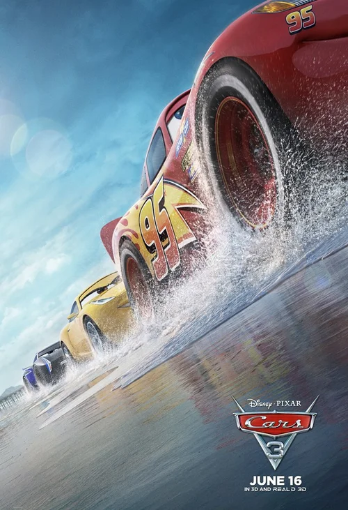

Lightning McQueen is a legendary champion racer who suddenly feels old when a fast, high-tech car named Jackson Storm starts winning every race. After a scary crash, Lightning goes to a fancy training center where a young coach named Cruz Ramirez tries to help him get his speed back using modern computers. Instead of just using machines, Lightning takes Cruz to old dirt tracks to learn the secrets of his old teacher, Doc Hudson, and he eventually realizes that helping Cruz become a racer is his true way to stay part of the sport.
I love the Cars series because it shows how much a person can change when they find true friends and a supportive community. My favorite character is Lightning McQueen because he grows from a selfish racer into a kind mentor who cares more about helping others than winning trophies. The movies are special to me because they remind us that the journey and the people we meet are more important than just reaching the finish line. This content was created with the help of A.I.